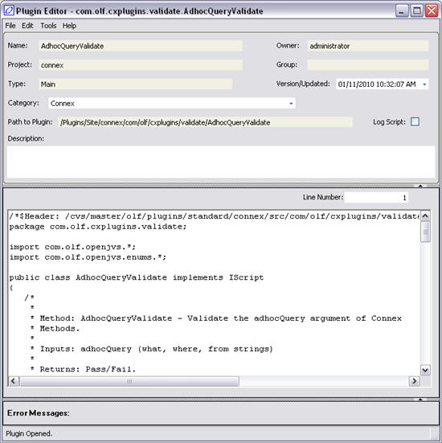
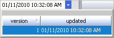

The Plugin Editor is used to edit and view plug-ins. The Plugin Editor is available in V9.0r1 and up.
This window can be accessed via multiple paths in the system. Listed below are two options.
From the Admin Manager:
1. From OpenLink Central start the Admin Manager.
2. Select the System Administration tab.
3. Select the Plugin Editor icon.
or
From the System Monitor:
1. From OpenLink Central start the System Monitor.
2. Select the Plugin Editor icon.
The following screen displays:

This window contains the following menu items:
|
Menu |
Item |
Description |
|
File |
Save Window Location |
Saves the position of the current window. |
|
New |
Clears the Script Editor window for entering new information. |
|
|
|
Open |
Displays a pop-up list of scripts that already exist in the database. |
|
|
Delete |
Deletes a saved script from the database after confirmation. |
|
|
Save |
Saves the current script to the database after confirmation. |
|
|
Displays the Script Properties window. |
|
|
|
Displays the Select XML Pack File or Plugins to Import dialog for the Plugin Bulk Import window. |
|
|
|
Displays the Plugins Export window. |
|
|
|
Print Screen |
Prints the current window. |
|
|
Exit |
Exits from the Script Editor window and returns to the parent window. |
|
Edit |
Find |
Opens an Input dialog for a text string search. |
|
Find Next |
Find the next occurrence of a text string. |
|
|
|
Cut |
Cuts the selected portion of the displayed script. |
|
|
Copy |
Copies the selected portion of the displayed script. |
|
|
Paste |
Pastes the selected portion of the displayed script. |
|
Undo |
Undo recent changes. |
|
|
Redo |
Redo recently removed changes. |
|
|
Select All |
Selects the entire text of the selected script. |
|
|
Tools |
Compile |
Compiles the completed script. |
|
Maintain Projects and Project Preferences. |
||
|
Launch Eclipse |
Launch the Eclipse java development tool. |
|
|
Help |
Help |
V10.1r1 and later. Displays the OpenJVS (Java) Documentation. |
|
|
About |
Displays the About window. |
There are no buttons on this window.
This window contains the following fields:
|
Field |
Description |
||||||||||||
|
Name |
The name of the Script. |
||||||||||||
|
Project |
Name of the project to which the plug-in is associated. |
||||||||||||
|
Type |
Indicates the type of script. There are five different types:
|
||||||||||||
|
Category |
The Script Category. When creating new scripts, if you want the script to appear in specific categories, be sure to select one or multiple categories in the script category field in the script editor. A script can have multiple categories and appear in more than one category list, although there will be only one copy of the script. See Script Category. |
||||||||||||
|
Path to Plugin |
Lists the location where this plug-in is saved. |
||||||||||||
|
Owner |
The user ID who is the owner of the script. |
||||||||||||
|
Group |
The name of the security group to which the script is assigned. This is a read-only field. To set this up, you must go the properties window. See Properties. |
||||||||||||
|
Version/Updated |
V10.1r1 and later. A pick-list displaying available versions and the date/time the last modification to this plug-in was made.  |
||||||||||||
|
Last Updated |
V10.0r2 and earlier. Lists the user id, date, and time the last modification to this task was made. |
||||||||||||
|
Log Script |
V10.0r2 and later. If there is a check in this box, then the system will log the script. Script and task logging is enabled at the script level. Script logging can be enabled on a script by selecting the Log Script checkbox. Task logging is automatically enabled if the main script of the task is configured for script logging. Both task and script logging are automatically enabled when a task/script job is run in a workflow in the Services Manager, or when running a Credit, Risk, or RTPE batch task. The following information is captured and stored when a task and a script are logged:
This information is saved in the database. This is not stored in a file. This information takes up a log of space, so clients should purge this data keeping just a few months worth in the production database (depending on the volume of data for the client). See Purging Data. |
||||||||||||
|
Description |
V10.0r2 and later. A user-defined text field for entering the description of the script. |
||||||||||||
|
Line Number |
Displays the current line number of the script. |
||||||||||||
|
Script List Box |
A list box containing the commands of the script. |
||||||||||||
|
Error Messages |